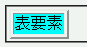
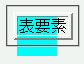

表要素内のセルに背景画像と背景色を同時指定している場合、ブラウザで画像を読み込まない設定にしているとき（または背景画像ファイルが存在しないとき）に表の一部しか指定した背景色で塗りつぶされない。
<table border="2"> <tr><td style="background:url(none.png) aqua;">表要素</td></tr> </table>
| 表要素 |
これは、存在しない画像を指定した場合の例になっています。
WinIE6.0での表示（標準モード）
NN4.78での表示
このバグは、背景画像と背景色をbackground属性及びbgcolor属性で指定した場合にも発生します。
NN4.78で塗りつぶす領域のずれが発生します。